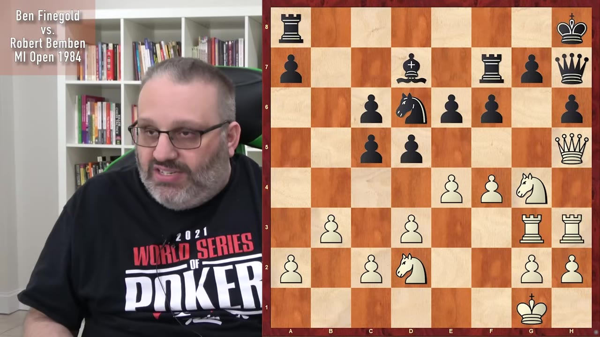
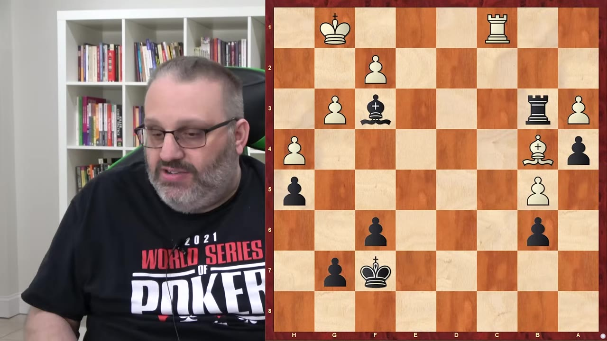
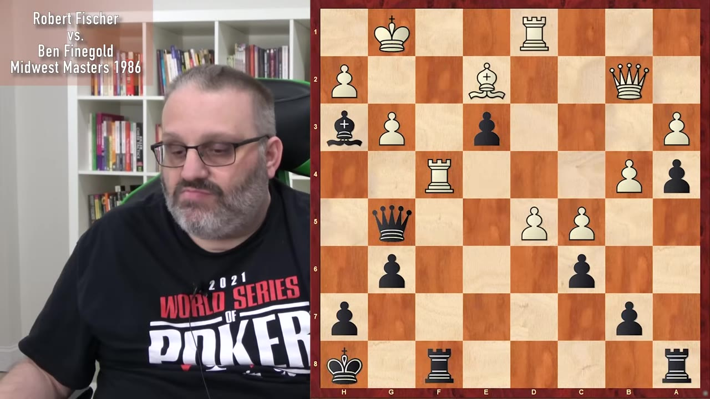
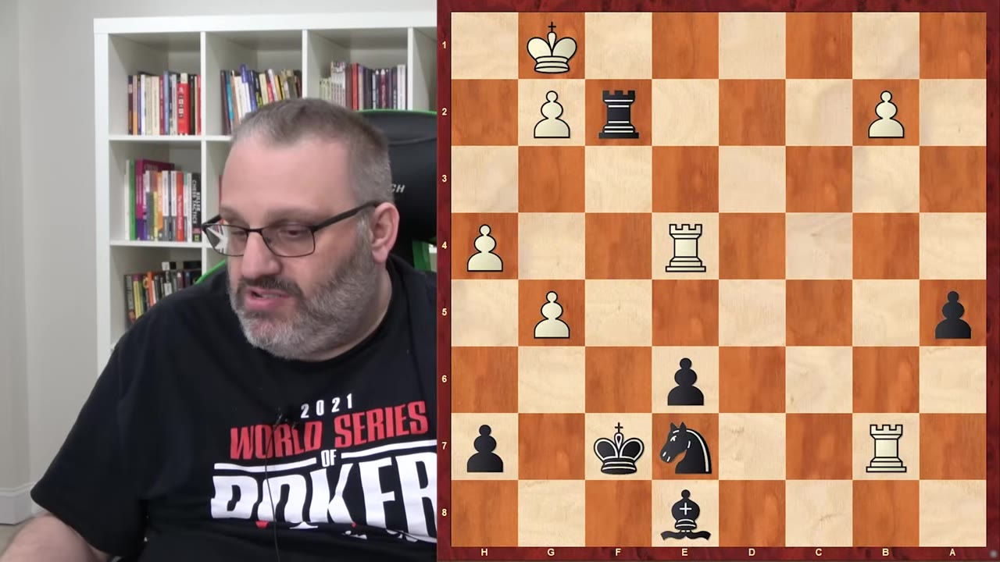
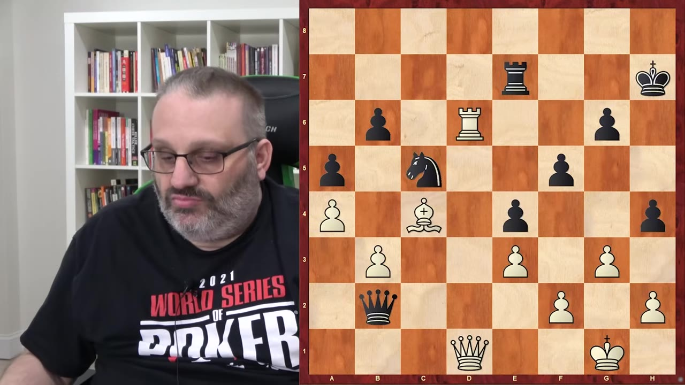
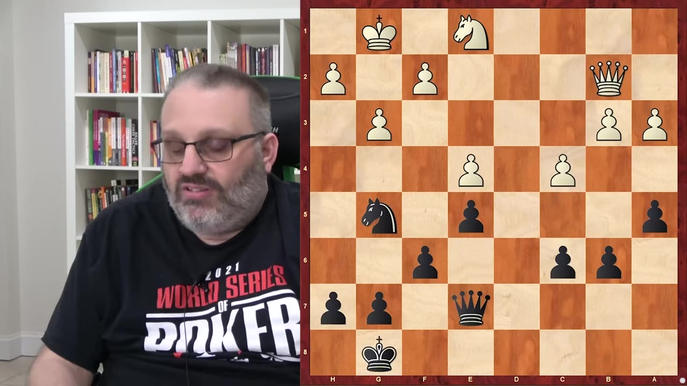

A grandmaster revisits six games from the 1980s and 90s to show that winning material in chess is only half the battle — you need the technique to convert it.
Watch on YouTube
He was 14 at the tournament. His opponent's pieces were all the way back on the first and second rank, with doubled c-pawns and an isolated a-pawn. His own position had no problems and he had an aggressive setup.
The move: knight takes h6. If the pawn takes back, rook g6 threatens to take h6. "If you can stop rook takes h6 you're a better chess player than I am." His opponent took with the queen instead, and Feingold made his first mistake of the game — he should have played queen g6 to win the queen outright but instead played queen f3, which still won but cost him a piece in the process.
You don't want to play for tricks when you're already winning — like, 'oh I'll sack a piece, if he takes it I have mate.' If you're already up a piece you're winning. If you sack a piece and calculate mate and you're wrong then it's even material.— Grandmaster Ben Feingold

Chess teachers tell you that bishops of opposite colors is a draw. Feingold calls this "number one, that's wrong." When you have rook and bishops of opposite colors, it's always winning because your bishop can do things the opponent's can't.
The real deciding factor was king activity. His king was free to walk up the board. His opponent's king was basically trapped forever on h2.

Feingold was playing black against Mihai Şurbu, a Romanian grandmaster who had left Romania because he "wasn't a fan of the Romanian government." Şurbu was crushing him — his passed d-pawn was strong and bishop c4 was a lethal threat. The engine said Şurbu had one move that wins.
We can't do it. We can't move the bishop away because then white's gonna do his bishop c4 taking everything stuff.— Grandmaster Ben Feingold
Instead of the winning move, Şurbu took on c6 — grabbing a pawn and creating two threats. Feingold found the only move that draws, then h5, which was the only good move. Şurbu blundered again by taking on b7, choosing the option that gave Feingold the most counterplay.

Feingold had an extra pawn for two pieces, a rook and a pawn for a knight, with the knight pinned. If his opponent moved his rook horizontally, Feingold would play rook f4 check and win the knight.
His opponent played the "crazy" move — rook takes g2 check. Once you see it you can't unsee it. The bishop skewers, pins, and forks. "Lions and tigers and bears." Unfortunately it loses by force.
Tricks are for kids. When you're winning you want to keep it simple.— Grandmaster Ben Feingold

Against his friend Eric Knopper from the Netherlands, Feingold had a winning position because his pieces were coordinated and focused while Knopper's were "all just randomly interspersed on the board."
This is the greatest thing ever. I liked it because I'm the one who played it.— Grandmaster Ben Feingold
The key was that Knopper missed rook h8 check, which he shouldn't have missed because it's a check. "If you're 2400 and the guy goes check checkmate how'd you get your rating?"

The opponent was a German FM who needed a draw to get an IM norm and offered Feingold a draw on move 10. "Are you insane?" Same.
The opponent played f3, breaking the rule "never play f3" — it weakened all the dark squares and let Feingold's queen infiltrate. He saved the knight but took a pawn and lost the b-pawn defense.
The finish: knight f4 threatening queen e2 check (winning the knight), queen g2, h5 to open the kingside, queen e6 threatening the c4 pawn. The opponent played king f1 which was a blunder. Feingold won immediately with check, then queen takes knight check — ending his dreams of becoming an IM.
That's what you do with winning positions. You make sure that you're safe, you continue doing what you were doing that got you to the winning position. Don't get in time trouble. That's the number one culprit.— Grandmaster Ben Feingold